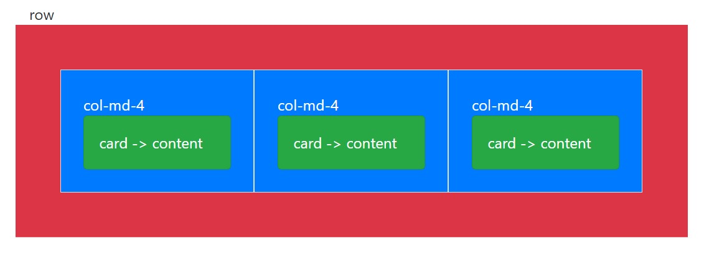
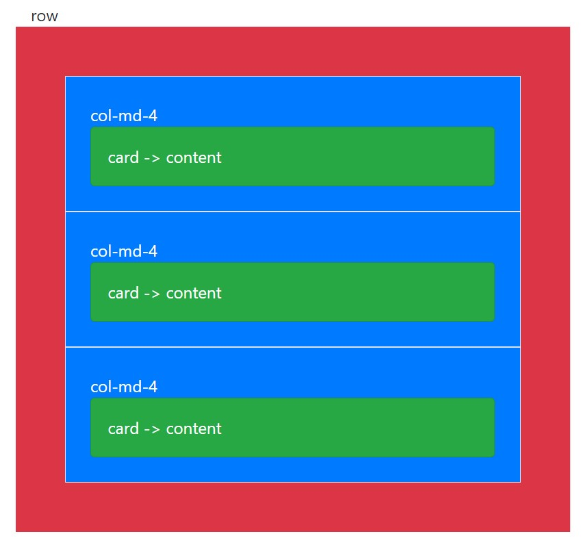

O básico de grid
-
Em um layout grid, o conteúdo deve ser colocado dentro das colunas, e somente as colunas podem ser filhas diretas de uma "row".
Exemplo:
row
├── col
│ └── Content
└── col
└── Conntent -
Para controlarmos a responsividade, temos cinco breakpoints, que são baseados em media queries min-width.
São eles: xs, sm, md, lg, xl (extra-small, small, medium, large, extra-large) respectivamente.
Pelas media queries serem baseadas em min-width, sempre que setarmos um breakpoint .col-md-4 por exemplo, esse padrão vai servir para os breakpoints xl, lg e md, mas não para os demais (xs, sm). (Isso também se aplica aos demais breakpoints). ref exemplo 1
Limite de Colunas
O Grid do bootstrap é dividido em 12 colunas dentro de uma .row individual. Isto faz com que as colunas quebrem para próxima linha caso a soma das colunas excedam 12.
Exemplo
Soma das colunas resultam em 12, logo não há quebra.
Neste caso, a soma das colunas excedem 12 e a coluna (col-5) é jogada para próxima linha.
Como os breakpoints funcionam?
Quando falamos em breakpoints usando bootstrap, temos que ter em mente o seguinte:
os breakpoints trabalham com min-width.
Isto quer dizer que, quando um breakpoint é utilizado, todos os outros breakpoints que vierem acima dele vão receber
o mesmo efeito.
Se utilizarmos o breakpoint col-md (medium >= 768px), ele vai aplicar o medium e para todos os breakpoints que estiverem acima dele, ou seja, md, lg, xl (medium, large, extra-large).
No exemplo abaixo, utilizamos o breakpoint medium com um tamanho de coluna específica col-md-4. Com isso teremos uma linha com 3 colunas (12 "espaços" / 4) nas telas medium, large e extra large.
>= 768
Em contrapartida, todos os breakpoints que estiverem abaixo do breakpoint utilizado, vão receber o tamanho default e ocupar todo o espaço de uma linha(row).
< 768
